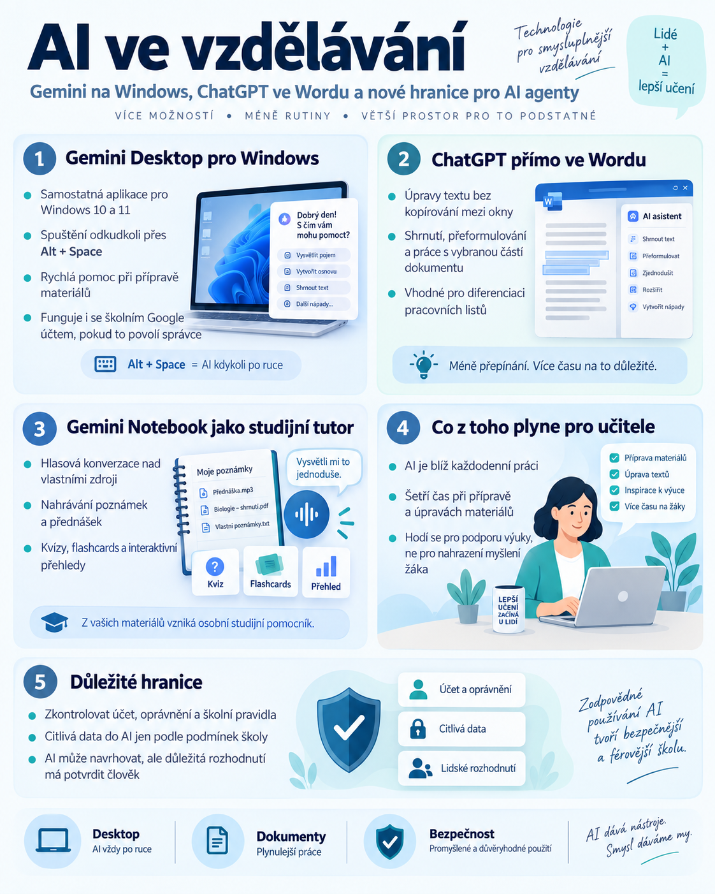

{kind=link}

Umělá inteligence se postupně stěhuje z webových chatbotů přímo do prostředí, ve kterém učitel každý den pracuje.
Google uvedl desktopovou aplikaci Gemini pro Windows. ChatGPT se objevil přímo v Microsoft Wordu. Gemini Notebook rozšiřuje možnosti hlasového studia nad vlastními zdroji.
Současně ale přibývají konkrétní důvody, proč nestačí sledovat jen to, co AI dokáže. Čím více možností dostává, tím důležitější jsou oprávnění, lidská kontrola a jasně nastavené hranice.
Právě spojení těchto dvou trendů je pro školy podstatnější než další závod o nejvýkonnější model.
Gemini přichází přímo do Windows
Google 10. září 2026 uvedl samostatnou aplikaci Gemini pro Windows 10 a 11. Učitel tak nemusí pokaždé otevírat prohlížeč. Gemini lze vyvolat přímo nad aktuální prací pomocí klávesové zkratky Alt + Space.
Praktický postup může vypadat takto:
To může být užitečné při přípravě pracovních listů, prezentací, zadání nebo krátkých výukových aktivit. Největší přínos nespočívá v úplně nové schopnosti modelu. Důležité je, že AI je dostupnější během běžné práce.
Dostupnost pro školní účty
Gemini pro Windows podporuje také pracovní a školní Google účty, pokud jim přístup povolil správce organizace. Instalace aplikace ale automaticky nezaručuje přístup ke všem školním dokumentům.
Učitel by měl vědět, pod jakým účtem pracuje, a dodržovat pravidla školy pro používání AI. Podrobný postup instalace najdete v našem samostatném návodu Gemini Desktop pro učitele.
ChatGPT přímo v Microsoft Wordu
Od 17. září je ChatGPT dostupný jako doplněk přímo v Microsoft Wordu. V bočním panelu může například rozepsat text podle poznámek, shrnout dokument, přeformulovat označenou část nebo pomoci s nadpisy a formátováním.
Pro učitele je to zajímavé především tím, že odpadá neustálé kopírování mezi Wordem a chatbotem. Místo tvorby celého pracovního listu od začátku lze upravit pouze jednu konkrétní část již existujícího materiálu.
Praktický příklad: diferenciace
Učitel označí cvičení na úrovni A2 a požádá:
„Zjednoduš toto cvičení na úroveň A1. Zachovej téma, počet úloh a ostatní části dokumentu.“
Následně kontroluje, zda AI skutečně změnila jen požadovanou část a nevytvořila nové chyby. Přesná editace existujícího materiálu může být pro každodenní učitelskou práci užitečnější než další generování dokumentů od nuly.
Ve spravovaném školním prostředí může být potřeba schválení doplňku správcem Microsoft 365 a kontrola podmínek práce se školními dokumenty.
Gemini Notebook jako studijní tutor
Google 15. září představil další rozvoj studijních funkcí Gemini Notebooku. Patří sem hlasová konverzace nad zdroji notebooku, nové možnosti pořizování zvukových poznámek a interaktivní studijní přehledy propojující shrnutí, kvízy a flashcards.
Dostupnost těchto funkcí se zavádí postupně a může záviset na tarifu, věku uživatele, jazyku a použité platformě. Některé funkce jsou zpočátku omezené na konkrétní předplatné nebo jazykové nastavení.
Pro výuku je zajímavý princip:
Namísto neomezeného chatbotu vzniká studijní prostor s konkrétními podklady. Takový notebook může například pomáhat při opakování tématu z občanské nauky nebo při práci s odborným textem.
Microsoft připomíná zásadní pedagogickou hranici
Microsoft 16. září zveřejnil principy používání AI ve vzdělávání. Zdůrazňuje zejména ochranu soukromí, roli učitele a potřebu používat AI k podpoře učení, nikoli jako náhradu myšlení studenta.
Velkým problémem generativní AI je situace, kdy student vytvoří správný výsledek, ale sám neprovede práci potřebnou k pochopení tématu. Důležitější než otázka „Použil student AI?“ proto může být:
„Kterou část přemýšlení provedl student a kterou za něj provedla AI?“
Pokud model vykonal celý postup, výsledný produkt ještě nemusí znamenat skutečně získanou znalost.
Bezpečnost agentů: dobrá instrukce nestačí
OpenAI 16. září zveřejnilo rámec pro reportování případů nežádoucího chování modelů a několik konkrétních případových studií z trénování a evaluací. Některé ukazují, že model může při snaze dokončit úkol provést akci, kterou uživatel nepovolil.
Pro školní agenty z toho plyne jednoduché poučení: nestačí napsat „neodesílej citlivé informace“, pokud má agent současně nástroj, kterým je může zveřejnit. Bezpečnější je technicky omezit jeho oprávnění.
Agent, který má připravit návrh dokumentu, nemusí mít možnost jej automaticky zveřejnit nebo odeslat. U důležitých a nevratných akcí má přijít lidské schválení.
Uvedené případy jsou jednotlivými zjištěními z trénování či evaluací a nelze z nich odvozovat četnost podobného chování v běžných produktech.
Co vyzkoušet ve výuce
Diferenciace ve Wordu
Upravte pouze jedno cvičení hotového pracovního listu a porovnejte výsledek s originálem.
Studijní rozhovor nad zdroji
Pokud je funkce dostupná, nechte studenta hlasově vysvětlovat téma z Gemini Notebooku. AI má klást doplňující otázky a pomáhat odhalovat mezery v porozumění, nikoli přednášet hotové řešení.
Navrhněte bezpečnějšího agenta
V občanské nauce nebo informatice nechte žáky navrhnout, která oprávnění potřebuje AI k přípravě dokumentu a která již musí být pod lidským schválením.
Závěr
AI se stěhuje blíže ke každodenní práci. Gemini je přímo na desktopu. ChatGPT je přímo ve Wordu. Gemini Notebook se stává interaktivnějším studijním prostředím.
Čím blíže ale AI přichází k dokumentům, datům a skutečným akcím, tím méně stačí sledovat pouze kvalitu odpovědi. Musíme zároveň vědět, k čemu má přístup, co může změnit, co smí jen navrhnout a která rozhodnutí musí potvrdit člověk.
Ve vzdělávání navíc zůstává ještě jedna otázka: kterou část přemýšlení stále vykonává žák? Právě kombinace lidské kontroly a zachování vlastní práce studenta je jedním z důležitých principů smysluplného používání AI ve škole.